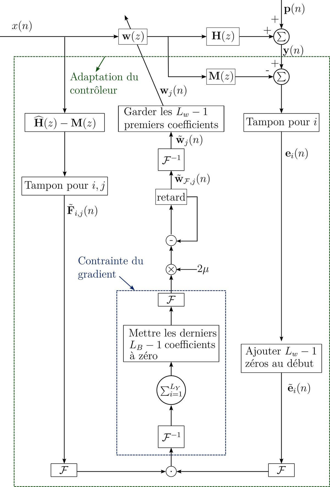
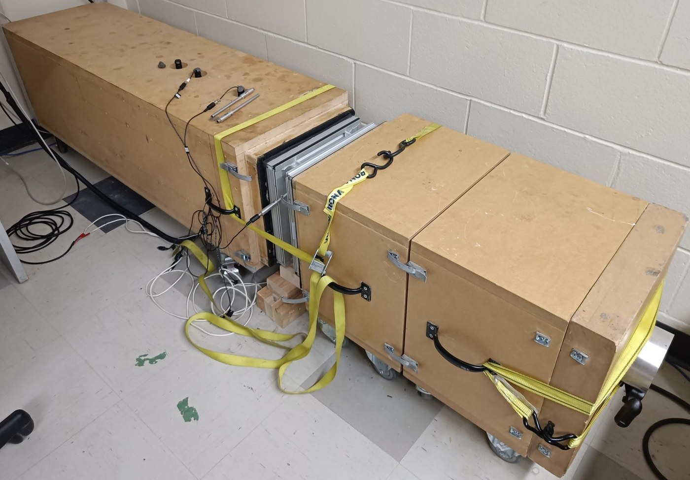
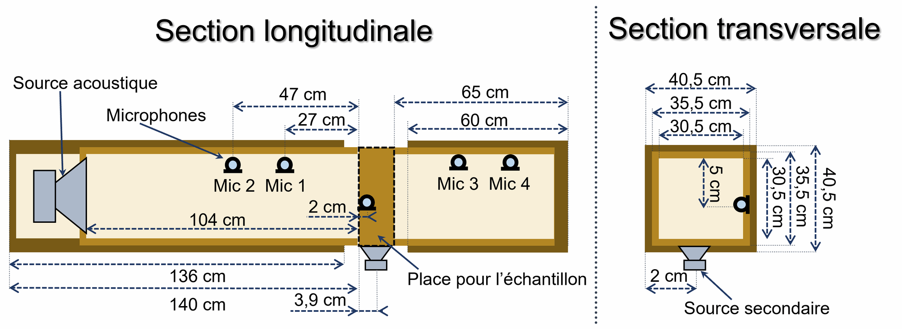
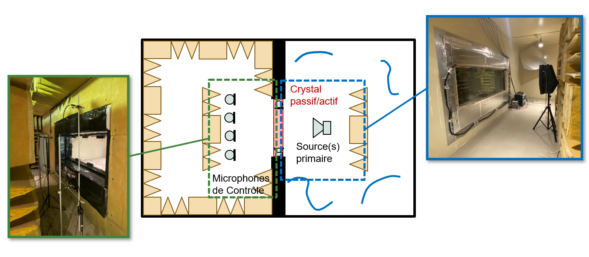
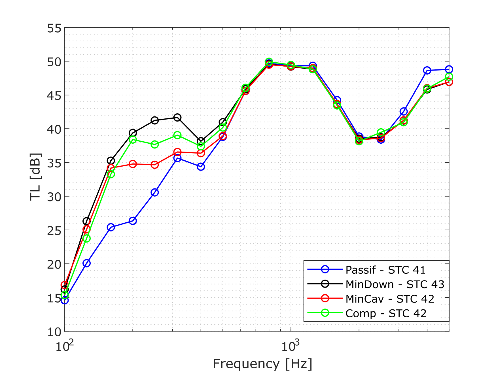
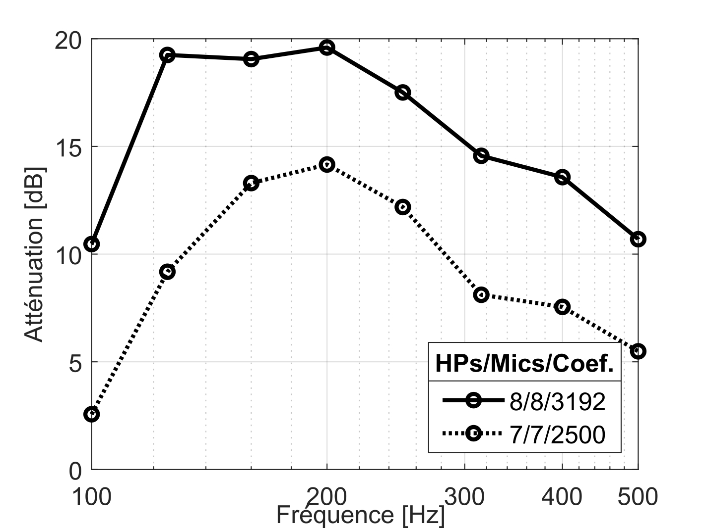

Quatre ans de recherche sur la réduction active du bruit transmis aux basses fréquences à travers une double cloison : modélisation vibroacoustique par éléments finis, identification expérimentale des chemins primaires et secondaires, puis contrôle adaptatif multicanal en temps réel.
Contribution principale : une méthode de compensation du signal d'erreur qui minimise le champ acoustique aux points non monitorés — là où les stratégies classiques dégradent la performance hors des microphones d'erreur.
Une double cloison — un double vitrage, par exemple — isole très bien du bruit en moyennes et hautes fréquences, et très mal en dessous de quelques centaines de hertz : la cavité d'air se comporte comme un ressort entre deux masses, et l'ensemble entre en résonance là où le bruit urbain et le bruit de transport ont précisément le plus d'énergie. Épaissir le vitrage ne résout rien à ces fréquences ; c'est le domaine du contrôle actif.
Le contrôle actif classique impose alors un dilemme. Pour réduire réellement le bruit dans la pièce, il faut y placer les microphones d'erreur — c'est la stratégie de minimisation en aval (MinAval), la plus performante, mais aussi la plus intrusive : câbler des microphones dans l'espace habité est rarement acceptable. La solution commode consiste à ne mesurer que dans la cavité inter-vitrages (MinCav) ; mais réduire la pression dans la cavité ne réduit pas nécessairement l'onde transmise, et l'expérience montre que le gain en aval reste alors faible.
La contribution de cette thèse — la stratégie Comp — lève le dilemme. Un filtre de compensation est appris pendant une phase initiale où les microphones aval sont temporairement présents. Une fois ce filtre identifié, ils sont retirés : le contrôleur ne mesure plus que dans la cavité, mais poursuit l'objectif de la minimisation en aval. Autrement dit, la zone de silence est créée là où plus aucun capteur ne se trouve.

Le signal d'erreur réellement minimisé n'est pas la pression mesurée en cavité, mais cette pression corrigée par le filtre de compensation. Le formalisme établit que le FxLMS avec compensation est équivalent à un FxLMS classique dont la réponse impulsionnelle est le filtre compensé k(z) = h(z) − m(z). Cette équivalence a une conséquence pratique importante : elle permet de reconstruire la même loi en commande par modèle interne (IMC-FxLMS-COMP), donc de se passer d'un signal de référence avancé cohérent avec la perturbation — hypothèse rarement satisfaite dans une installation réelle.
Avant toute expérience, une étude numérique en co-simulation COMSOL Multiphysics – MATLAB a servi à comprendre la physique du problème plutôt qu'à prédire un chiffre. Elle a donné trois résultats qui ont ensuite structuré tout le travail expérimental.
Deux bancs successifs, du plus contraint au plus réaliste. Le premier isole la physique ; le second confronte la méthode à un vitrage de taille utile et à une mesure normalisée d'isolement.


Le tube impose une onde plane et une incidence normale sur l'échantillon, retenue comme cas défavorable. Sa section carrée de 30,5 cm reçoit le double vitrage ; deux microphones en amont et deux en aval permettent de séparer l'onde incidente de l'onde transmise et d'en déduire l'isolement, tandis qu'un microphone débouche dans la cavité inter-vitrages et que la source secondaire y injecte le signal de contrôle par le côté. C'est ce montage — un seul mode de cavité, un champ parfaitement maîtrisé — qui a permis de quantifier ce que la compensation pouvait atteindre avant d'aborder le multicanal.



Toutes les valeurs ci-dessous sont expérimentales, et toutes sont des atténuations : des décibels réellement retirés au bruit transmis. MinAval sert de référence de performance — c'est ce que l'on obtiendrait en acceptant de câbler des microphones dans l'espace à protéger. La question posée à Comp est de savoir combien on en conserve sans eux.
Lecture d'ensemble. Sur le banc monocanal, la compensation retire 10 dB au bruit transmis là où la minimisation directe en retire 11 : à 1 dB près, se priver de tout capteur dans la zone protégée ne coûte rien. Le principe est validé.
Sur le prototype multicanal, le résultat se lit à deux niveaux. En isolement de la paroi, Comp tient tête à MinAval — 12 dB contre 13 dB de gain au maximum, à 1 dB près sur toute la bande utile : le bruit qui traverse est réduit dans les mêmes proportions. En atténuation mesurée aux microphones aval, en revanche, l'écart est net : 5 à 11 dB contre 9 à 14 dB. La compensation isole donc aussi bien, mais creuse une zone de silence moins profonde — pour une raison identifiée et quantifiée, la charge de calcul, traitée ci-dessous.
Pour mémoire, l'indice normalisé global suit la même hiérarchie mais l'aplatit : STC 41 en passif, 43 avec MinAval, 42 avec Comp et MinCav. Le STC intègre tout le spectre jusqu'à 4 kHz, où le contrôle actif n'agit pas ; il masque donc l'essentiel du gain, concentré entre 125 et 500 Hz.